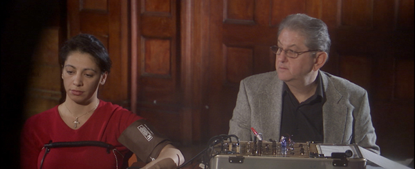
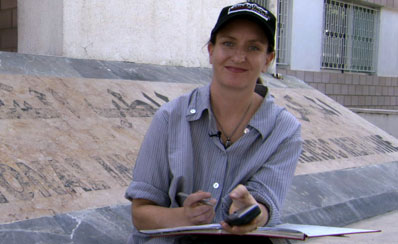

Directed by Anna Broinowski,Australia, 2007Runtime: 106min.

Pittsburgh Premiere
Awards
* 2007 Adelaide International Film Festival- Top Ten Audience Favorite
* 2007 HOT DOCS- Top Ten Audience Favorite
* 2007 AFI Awards for Best Documentary and Best Editing
* 2007 Melbourne International Film Festival- Official Selection
* 2007 Vancouver International Film Festival- Official Selection
* 2007 Sheffield International Film Festival- Official Selection
* 2008 Silverdocs Documentary Festival (WGA Documentary Screenplay Award)
“It’s ‘faction’- fact and fiction,” says Norma Khouri, “it’s like the DaVinci code,” but the DaVinci code never painted the truth as Khouri did. Her friend suffered a violent death for being involved with a Christian man. The family restored honor through murder. Khouri fled Syria, wrote the book of her “true” account while in hiding and began a personal mission against honor killings. The book was an international bestseller, propelling Khouri to fame and fortune. She was a publisher’s humble and heroic ideal until 2004, when esteemed Sydney Morning Herald journalist Malcolm Knox exposed her book as a work of fiction. Director Broinowski blurs traditional directorial bounds as much as Norma blurs the bounds between fact and fiction. Does Broinowski observe or participate in Khouri’s publicity? Who is the true Norma Khouri: the con or the artist? The only reality of the film is that each truth veils forbidden lies.
Presented in conjunction with College of Humanities and Social Sciences Humanities Scholars Program

Anna Broinowski
Broinowski graduated from Australia’s is National Institute of Dramatic Art (NIDA) with a degree in Performing Arts in 1990 and worked as a playwright and actress, winning the 1996 NSW Premier’s Literary prize for her play The Gap. As of 1995, she began her directorial explorations. Her documentaries and shorts have won numerous awards in Australia and overseas including three AFI’s, two Australian Film Critics’ Awards and the prestigious 2007 Rome Film Festival 20,000 euro ‘Cult’ prize. The successful theatrical release of her docudrama Forbidden Lie$ has her firmly fixed in her directorial role. She is now developing a slate of drama and documentary feature films.